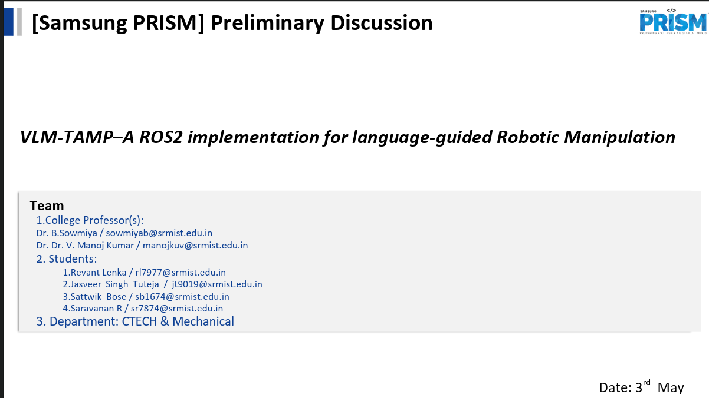
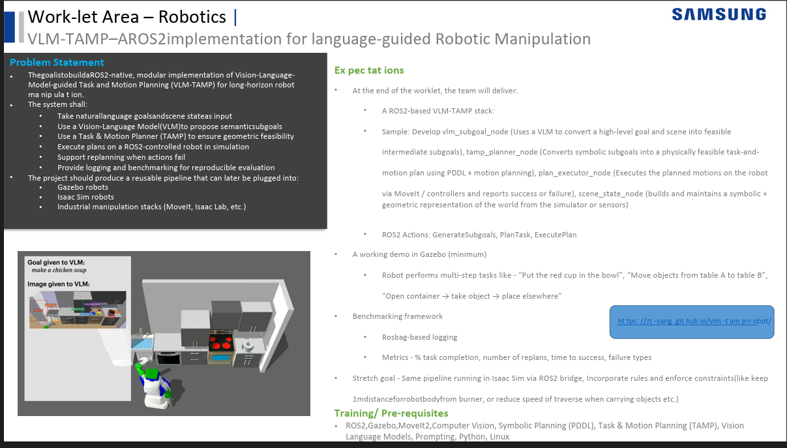

Project Foundations & Scope
Summary of the preliminary project proposal, problem statement, and deliverables defined in the initial Samsung PRISM requirements.

VLM-TAMP Core Initiative
Official preliminary worklet between Samsung PRISM and SRM Institute of Science and Technology. Initiated to advance robot manipulation from static scripts to generalized natural language comprehension and closed-loop control.
- Faculty Mentors: Dr. B. Sowmiya & Dr. Dr. V. Manoj Kumar
- Student Researchers: Jasveer Singh Tuteja, Revant Lenka, Sattwik Bose, Saravanan R
- Scope: Long-horizon household manipulation, Kitchen World simulations, and mobile manipulators.

Problem Statement & Deliverables
Build a ROS2-native, modular implementation of Vision-Language-Model-guided Task and Motion Planning (VLM-TAMP). Takes natural language prompts and scene state, produces semantic subgoals via VLM, enforces geometric feasibility via TAMP, and executes with dynamic replanning.
-
Modular ROS2 Nodes:
vlm_subgoal_node,tamp_planner_node,plan_executor_node,scene_state_node. -
Action Interfaces:
GenerateSubgoals,PlanTask,ExecutePlan. - Simulation Targets: Gazebo, PyBullet Kitchen World, and stretch goal Isaac Sim bridge.
What We Have Worked On Till Now
Milestones completed from initial baseline manipulation to dynamic world modeling and closed-loop replanning.
Baseline Manipulation in Kitchen World
Validated the baseline VLM-TAMP pipeline across realistic kitchen manipulation tasks using TIAGo bot and PR2 mobile manipulators.
- ✓ Scissors pick-and-place operation
- ✓ Cabbage retrieval from refrigerator
- ✓ Chicken leg grasp and counter placement
- ✓ Bottle grasp and relocation
- ✓ Custom 4-Room World Model with human dynamic obstacles
World Model & Scene Graph Integration
Created real-time PyBullet runtime synchronization to maintain physical pose tracking, entity classification, and dynamic topological relationships.
- ✓ Scene Graph node creation & tracking
- ✓ Semantic entity states: Cabbage, Chicken Leg, Fork, etc.
- ✓ Relationship updater:
HOLDS,SUPPORTS,CONTAINS - ✓ Event manager:
OBJECT_MOVED,OBJECT_PICKED,OBJECT_DROPPED - ✓ Natural language chatbot interface integration
Dynamic Replanning Architecture
Designed the closed loop between physical environment disturbances, plan invalidation, and automated recovery trajectory generation.
- ✓ Dynamic replanner bridge to PDDLStream agent
- ✓ Environment B Stress Test: 0.0000m recovery error
- ✓ Disturbance events:
OBJECT_MOVED,OBJECT_DROPPED - ✓ Dynamic recovery waypoint synthesis logic
New Kitchen World & Replanning Testing
Constructed the upgraded PyBullet Kitchen World environment and completed stress testing of the dynamic replanning runtime loop.
- ✓ Upgraded Kitchen World (appliances & stations)
- ✓ DynamicReplanner hook in PDDLStream agent
- ✓ In-flight disturbance testing with debouncing
- ✓ Zero-divergence recovery in cabbage log
- ✓ Captured demonstration:
replanning.webm
New Kitchen World & Dynamic Replanning Testing
Progress completed over the past week: Construction of our upgraded 3D Kitchen World simulation environment and full end-to-end testing of the dynamic replanning recovery loop.
Upgraded Kitchen World & Live Replanner Validation
We developed an expanded PyBullet kitchen environment featuring multi-tier storage, appliances, and dynamic objects, then validated our closed-loop replanning pipeline by introducing perturbations during task execution.
-
New Kitchen World Environment: Built high-fidelity simulation model with articulated entities (refrigerator, dishwasher, braiser body/lid, tabletop stations) and verified collision-free approach paths.
-
Direct Runtime Hook in Agent: Integrated the
DynamicReplannerdirectly insidepddlstream_agent.py, allowing real-time event checks at every action step without interrupting process control. -
Perturbation & Recovery Testing: Tested dynamic target shifts and obstacle insertions. The system triggers
OBJECT_MOVED, suspends the obsolete trajectory, resynthesizes subgoals via FastDownward, and recovers cleanly.
Video Demonstrations & Recorded Tests
Direct recordings from our simulated Kitchen World and dynamic stress-test environments showcasing perception, manipulation, scene graphs, and replanning.
Dynamic Replanning in New Kitchen World
Testing our closed-loop recovery pipeline inside the newly built Kitchen World. When an unexpected disturbance alters object coordinates mid-task, the system immediately suspends the old path, resynthesizes recovery steps via FastDownward, and reaches the goal.
Cabbage Retrieval & Place
The robot accesses the refrigerator compartment, detects the organic cabbage geometry, computes grasping pose, and navigates safely to place it on the kitchen counter.
Cabbage with Live Scene Graph
Demonstrates runtime Scene Graph tracking. As the robot lifts and moves the cabbage, the relationship dynamically updates from CONTAINS(Fridge, Cabbage) to HOLDS(Robot, Cabbage) to SUPPORTS(Counter, Cabbage).
Natural Language Chatbot
Interactive chatbot integration accepting user intent (e.g., "Prepare ingredients for chicken soup"), decomposing high-level language into executable sequence subgoals for the motion planner.
Chicken Leg Pick-and-Place
Testing grasp stability on irregular organic shapes. Robot plans collision-free arm trajectories, achieves firm contact with the chicken leg model, and positions it on the counter surface.
Fork Precision Manipulation
Evaluating precision tool grasping for thin utensil objects. Verifies gripper clearance, narrow approach vectors, and anti-slip execution during tabletop movement.
Dynamic Recovery Loop (Env B)
Robot encounters an unexpected obstacle mid-trajectory at (0.5, 0.5, 0.45). The DynamicReplanner detects OBJECT_MOVED, suspends old path, computes 3 new recovery waypoints, and achieves target with 0.0000m error.
System Architecture & AI Runtime
How our developed AIRuntime connects physical simulator events, topological scene graph updates, and the high-level PDDLStream replanning pipeline.
Closed-Loop Replanning Flow
1. Natural Language Goal
Human prompt ("Retrieve the cabbage for soup") received and processed by VLM / Chatbot node into semantic goal predicates.
2. Dynamic Scene Graph & World Model
GraphUpdater tracks physical PyBullet bodies; RelationshipUpdater infers spatial topologies (HOLDS, SUPPORTS, CONTAINS).
3. PDDLStream Task & Motion Planner
FastDownward symbolic planner evaluates feasibility while IKFast / TracIK solves whole-body inverse kinematics.
4. Dynamic Recovery Feedback Loop
If physical state diverges (e.g. OBJECT_MOVED), EventManager triggers DynamicReplanner to recompute recovery waypoints safely.
Core AI Runtime Subsystems
Key software subsystems orchestrated within the PyBullet simulation to achieve continuous state synchronization and disturbance recovery.
Primary synchronization loop bridging physical PyBullet physics steps with high-level cognitive layers. Executes tick-level updates of entity poses and topological links.
Directly embedded within pddlstream_agent.py. Intercepts perturbation events during task execution, immediately flags invalid steps, and triggers symbolic recovery re-planning.
Maintains the live semantic Scene Graph. Tracks continuous coordinate transforms and evaluates spatial relations (HOLDS, SUPPORTS, CONTAINS) in real time.
Listens for physical anomalies (OBJECT_MOVED, OBJECT_DROPPED) and filters transient physics jitter using temporal debouncing before alerting the planner.
Dynamic Environment Test Matrix (T1 – T12)
Systematic perturbation test cases defined in Slide 14 to evaluate world model resilience, state tracking, and replanning triggers under unexpected environmental changes.
Object Added
Instantaneous creation of unexpected object. Runtime updates Scene Graph with spatial coordinates.
Object Removed
Scene Graph purges removed body, removing all linked SUPPORTS/CONTAINS edges.
Object Moved
Generates OBJECT_MOVED event, calculates delta distance, and alerts the replanner.
Object Dropped
Detects abrupt vertical drop, updates state from HOLDS to ground/table support.
Target Blocked
Obstacle placed in front of destination zone; detects obstruction and halts direct trajectory.
Disturbed In-Flight
Target object displaced during robot trajectory; updates world graph and safely synchronizes replan.
Similar Objects
Distinguishes salt vs. pepper shakers and ensures semantic entity persistence without confusion.
Cupboard Open/Close
Updates accessibility status of internal items depending on articulated joint angles.
Microwave State
Monitors closed → open transitions; updates container state before reaching into chamber.
Braiser Lid Toggle
Identifies whether braiser pot lid is seated or removed, regulating containment access.
Moved Post-Planning
Object moved right after plan generation; validates plan validity before execution to prevent misses.
Multiple Changes
Simultaneous perturbations handled seamlessly by batching events into a unified replanning request.
Research Team & Mentors
Collaborative effort between SRM Institute of Science and Technology and Samsung PRISM.